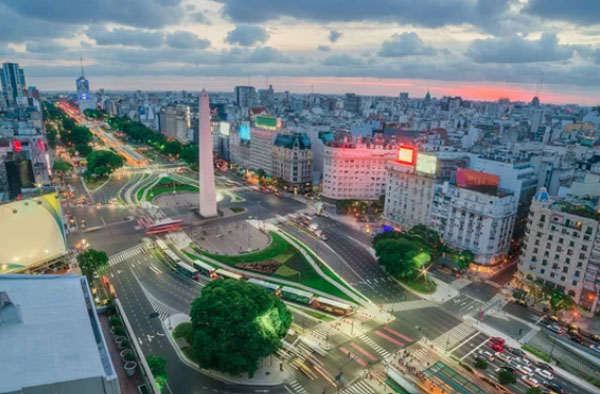
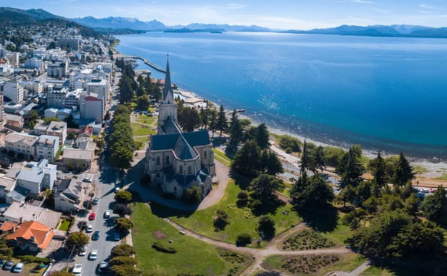
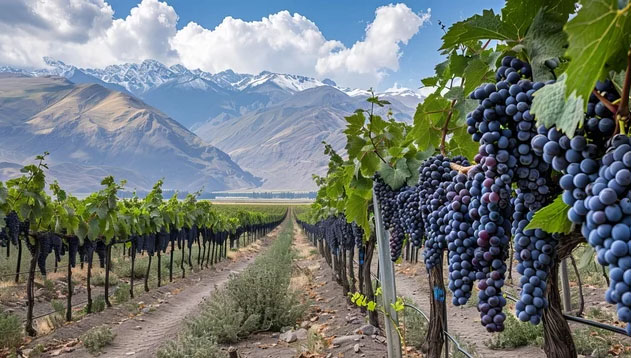
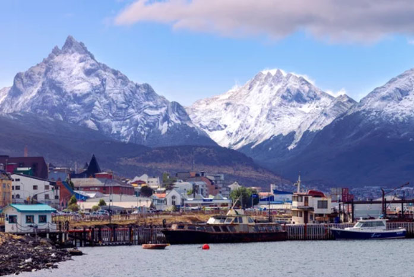

Explore the Endless Horizons
Argentina: From City Streets to Glacial Peaks
A land woven with passion, culture, and untamed beauty. Discover historic elegance and wilderness combined.
Thundering Waters & Timeless Spires
Iconic Landmarks
From the soaring urban silhouette of The Obelisco to the roaring, mist-shrouded chasms of Iguazu Falls and the colossal shifting ice of Perito Moreno, Argentina unfolds as a land where architectural elegance, untamed waters, and monumental glaciers exist as one living landscape—vibrant, raw, and endlessly majestic.

Iguazu Falls
One of the New Seven Wonders of Nature, these thundering waterfalls span the border with Brazil, nestled in a vibrant subtropical rainforest teeming with life.

Perito Moreno
A breathtaking wall of ice in Los Glaciares National Park, one of the few glaciers in the world that is still advancing.

The Obelisco
The soul of Buenos Aires. Standing tall at the heart of the widest avenue in the world, it commemorates the founding of this vibrant, European-influenced metropolis.
Boulevard of Tango & Glacial Frontiers
Cities of Distinction
From the historic, Paris-inspired grand avenues of Buenos Aires to the serene Alpine charm of Bariloche, the sun-kissed vineyards of Mendoza, and the windswept silence of Ushuaia at the edge of the world, Argentina’s cities unfold as living mosaics where European elegance, untamed frontiers, and passionate daily life continue to breathe as one.

Buenos Aires
A vibrant metropolis where European grand architecture meets the fiery rhythm of tango, colored by historic barrios and intellectual elegance.

San Carlos de Bariloche
An enchanting lakeside town reminiscent of Switzerland, framed by snow-capped Andean peaks and world-class artisan chocolate shops.

Mendoza
Sun-drenched vineyards resting under the shadow of the mighty Andes, producing some of the world’s finest Malbec wines.

Ushuaia
The southernmost city on Earth, acting as the dramatic gateway to pristine Antarctic waters and untamed glacial fjords.
Smoke, Spice & Velvet Sweetness
The primal crackle of wood fires searing rich meats, the golden crunch of a pocket filled with spiced warmth, and the melt-away embrace of dulce de leche. Argentina’s table is an unwritten poem of fire, dust, and deep, lingering comfort.

Asado
More than just a barbecue, the Asado is a sacred social gathering centered around high-quality grass-fed beef slow-cooked over wood embers.
Empanadas
Savory hand-held pockets of joy, filled with spiced meat, olives, or cheese. Each province boasts its own unique "repulge" or folding style.

Alfajores
A traditional steamed rice-flour dumpling filled with sweet molasses or sesame.
アルゼンチン共和国の歴史
Argentine Republic
Shadows of Spanish steel fading into the fierce dawn of independence, where the hoofbeats of gauchos reshaped the infinite plains. Across grand European boulevards and the faded ports of Buenos Aires, a young nation’s golden age bled into the heartbreaking, beautiful ache of a tango—a legacy forever written in defiance, pride, and bittersweet memory.
古代・先植民地期
先住民族の時代（～16世紀初期）
マプチェ族やグアラニー族、インカ帝国の影響を受けた北西部の先住民族などが各地で生活。
近世（植民地時代）
スペインによる征服 （1516年～）
フアン・ディアス・デ・ソリスがラプラタ川に到達。1580年にブエノスアイレスが再建され、定住が進む。
ラプラタ副王領の設置 （1776年）
ペルー副王領から独立し、ブエノスアイレスを首都とする副王領が確立。貿易の拠点として発展。
近代（独立と国家形成）
五月革命 （1810年）
ナポレオンのスペイン侵攻を機に自治政府を樹立。
独立宣言 （1816年）
サン・マルティンらの活躍により、スペインからの独立を宣言。
連邦派と集権派の対立 （19世紀前半）
国内の統治体制を巡り内戦が勃発。ロサスによる独裁政治が続く。
憲法制定と近代化 （1853年～）
統一憲法が制定され、近代国家の枠組みが完成。
近現代（繁栄と動乱）
「世界の穀倉」時代 （19世紀末～20世紀初頭）
農牧業の発展と欧州からの大量の移民により、世界有数の富裕国へ成長。
ペロン政権とペロニズム （1946年～）
フアン・ペロン大統領が労働者重視の政策（ペロニズム）を展開。
軍事独裁政権 （1976年～1983年）
軍部が実権を握り「汚い戦争」と呼ばれる左派弾圧を行う。1982年にはマルビナス（フォークランド）紛争でイギリスに敗北。
現代
民政移管と現代 （1983年～現在）
民主主義へ復帰。度重なる経済危機や債務不履行（デフォルト）に直面しつつ、政権交代を繰り返す。
ホセ・デ・サン・マルティン（José de San Martín）は、アルゼンチン、チリ、ペルーにおいて「国家の英雄（解放者）」として絶対的な尊敬を集める偉人です。特にアルゼンチンでは「祖国の父（Padre de la Patria）」と称されています。
南米の南半分をスペインから独立させた天才
シモン・ボリバルが南米の「北半分（ベネズエラ、コロンビアなど）」を解放したのに対し、サン・マルティンは「南半分（アルゼンチン、チリ、ペルー）」の独立を達成した立役者です。元々はスペイン軍の優秀なエリート軍人でしたが、祖国（南米）の危機に際してすべての地位を捨てて帰国し、独立軍を率いました。
世界最高峰「アンデス山脈越え」の伝説
彼の最大の功績は、独立を確実にするために、スペイン軍の拠点だったチリへ奇襲をかけたことです。ナポレオンのアルプス越えをも凌ぐと言われる「標高4,000メートルを超える極寒のアンデス山脈を、大軍を率いて超える」という不可能な作戦を成功させ、チリを、そして海を渡ってペルーをも解放しました。このドラマは、アルゼンチンの大自然の過酷さと、彼らの「反逆・誇り（Defiance & Pride）」を語る上で最高の素材です。
「権力に執着しなかった」本物の英雄
南米の独立指導者の多くが、独立後に権力闘争に巻き込まれたり独裁者になったりしました。しかし、サン・マルティンはペルーを解放した後、北の英雄ボリバルと会談（グアヤキル会談）すると、「南米の未来にリーダーは2人もいらない」と、すべての軍権と地位をボリバルに譲り、自らはひっそりとヨーロッパへ引退しました。この「無欲で高潔な引き際」が、今でも彼が全南米から「聖人」のように慕われる最大の理由です。
アルゼンチン近代史（ロサス独裁期）において、フスト・ホセ・デ・ウルキサ（Justo José de Urquiza）は、ロサスを打倒し、現在のアルゼンチン共和国の憲法の基礎を作った超重要人物です。
1. なぜアルゼンチン史で「ウルキサ」が隠れがちになるのか？
アルゼンチンの独立からロサス時代（1810〜1852年）の主役は、常に首都ブエノスアイレスでした。しかし、ウルキサはブエノスアイレスの人間ではなく、ラ・プラタ川の上流にある「エントレ・リオス州」という地方の有力者（カウディージョ）だったからです。
最初はロサスの部下だった：ウルキサはもともと、ロサスと同じ「連邦派（地方の自治を重んじる派閥）」であり、ロサスの忠実な将軍として、ウルグアイの「大戦争」でもブランコ党（ロサス側）を助けて戦っていました。
経済的な裏切り：しかし、ロサスがブエノスアイレスの港の貿易利益を独占し、上流の地方州（エントレ・リオス州など）が海外と直接貿易することを禁止したため、ウルキサは「ロサスが倒れなければ、俺たちの州は豊かにならない」と見限ったのです。
2. 1851年：ウルキサの「反旗」と大戦争の終結
1851年5月、ウルキサは「ロサス独裁の打倒」を掲げて公然と反旗を翻しました（これを「ウルキサの宣言」と呼びます）。ここで彼は、ロサスを包囲するために「大同盟（Ejército Grande）」という強力な国際チームを結成します。
エントレ・リオス州（ウルキサの軍隊）
ブラジル帝国（ロサスの影響力拡大を嫌っていた）
ウルグアイのコロラド党（モンテビデオでロサス軍に包囲されていた）
ウルキサ率いる同盟軍は、まず1851年にウルグアイに攻め込み、モンテビデオを9年間も包囲していたオリベ（ブランコ党）の軍をあっさりと降伏させました。これにより、ウルグアイの「大戦争」は幕を閉じました。
3. 1852年：「カセーロスの戦い」とロサスの失脚
ウルグアイを解放したウルキサは、そのままの勢いでアルゼンチン国内へ進軍します。
ロサスの亡命：1852年2月3日、ブエノスアイレス郊外の「カセーロスの戦い（Batalla de Caseros）」で、ウルキサの同盟軍はロサス軍を完全に撃破。敗れた独裁者ロサスは、イギリスの船に乗って海外へ亡命しました。
4. アルゼンチン史におけるウルキサの最大の功績
ロサスを倒したウルキサは、翌1853年に「アルゼンチン共和国憲法」を制定し、初代大統領（※現在の体制につながる連邦共和国としての初代）に就任しました。現在のアルゼンチン憲法も、この1853年憲法がベースになっています。
アルゼンチンがなぜこれほど破産を繰り返すのか
昔は世界トップクラスの金持ち国だった
20世紀初頭（1910年代頃）、アルゼンチンは広大な大平原（パンパ）から採れる牛肉や小麦の輸出で大儲けし、世界の富裕国トップ10に入っていました。「アルゼンチン人のように金持ち」という慣用句がヨーロッパで使われていたほどです。「パリのような大通り（Paris-inspired grand avenues）」はこの黄金期に作られました。
「ウソのような大盤振る舞い」のツケ
黄金期のあと、政権を握ったペロン大統領（とその妻エビータ）は、労働者に手厚い給料や福祉を配る政策（ペロニズム）を始めました。国民には大人気でしたが、国にお金がない時も借金をして配り続けたため、国の財政が慢性的な赤字体質になってしまいました。
止まらないハイパーインフレと借金
国にお金がなくなると、政府は「お札を大量に印刷する」という禁じ手を何度も使いました。その結果、お金の価値が暴落する激しいインフレ（物価高騰）が日常化します。外国からドルを借りては返せなくなり、踏み倒す（デフォルト）というサイクルをこれまでに計9回も繰り返しています。
現在（2026年）のリアルタイムな状況
直近のアルゼンチンは、2023年末に就任したハビエル・ミレイ大統領のもとで「自国通貨ペソを廃止して米ドルを導入する」「政府の役職を半分にする」といった、チェーンソーで予算を削るような過激な経済改革を進めています。インフレは一時的に落ち着きを見せ始めていますが、国民の生活は今もなお激しい変化の渦中にあります。
フォークランド紛争（アルゼンチン名：マルビナス紛争）は、1982年に起きた「泥沼の国内不満を、愛国心でそらすために仕掛けた戦争」です。
軍事政権の「目くらまし（支持率稼ぎ）」
当時、アルゼンチンは度重なる経済崩壊とハイパーインフレ、さらに軍事独裁政権による国民への弾圧（「汚い戦争」と呼ばれる人権侵害）により、国民の怒りが爆発寸前でした。追い詰められたガルティエリ大統領（軍人）は、「国民の不満の矛先を外（イギリス）に向けさせ、愛国心で政権を維持しよう」という、歴史上よくある「目くらまし」の賭けに出たのです。
国民にとっての「悲願の領土」
標的となった島（フォークランド諸島）は、1833年から約150年間イギリスが実効支配していました。しかし、アルゼンチンは独立時にスペインから引き継いだ正当な領土だと主張しており、学校でも「あそこは我が国の領土だ」と教え込まれていました。国民全員が「いつか取り返すべき聖地」と信じていたため、ここを攻めれば必ず国民が熱狂すると政府は確信していたわけです。
「イギリスは戦わない」という致命的な読み違い
当時、イギリスも不況の真っ只中で、軍事予算を削り、フォークランド周辺の警備艦も退役させる計画を進めていました。アルゼンチン側は「地球の裏側のこんな小さな島のために、わざわざイギリス軍がわざわざ大軍を派遣して反撃してくるわけがない」と完全に高を括って、1982年4月2日に奇襲上陸を仕掛けました。
鉄の女サッチャーの猛反撃と政権崩壊
ところが、当時のイギリス首相は「鉄の女」と呼ばれたマーガレット・サッチャーでした。彼女もまた国内の不況で支持率が低迷しており、ここで弱腰を見せるわけにはいきませんでした。
イギリスは即座に空母や原子力潜水艦を含む大艦隊を南米へ派遣し、猛反撃を開始しました。わずか2ヶ月半の激しい戦闘の末、アルゼンチン軍は全面降伏することになります。
アルゼンチン: 負けるはずがないと信じ込まされていた国民は敗戦に激怒し、軍事政権は完全に崩壊、皮肉にも国に民主主義が戻るきっかけとなりました。
現代（2026年）でも続く火種
この戦争は現在でもアルゼンチン人の心に深い傷（と強いプライド）を残しており、国憲法にも「マルビナス諸島の領有権回復」が明記されています。大統領が誰になろうと、この問題だけはイギリスに対して今も一歩も引いていません。